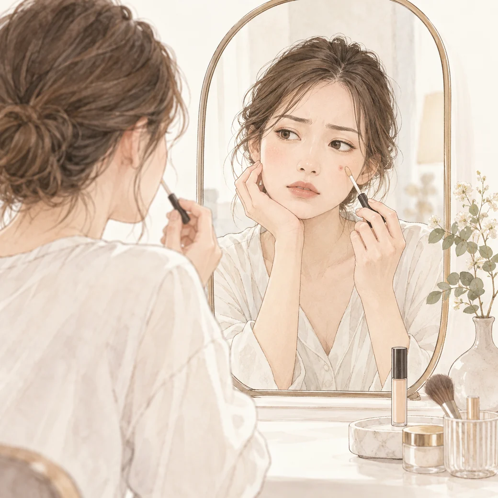
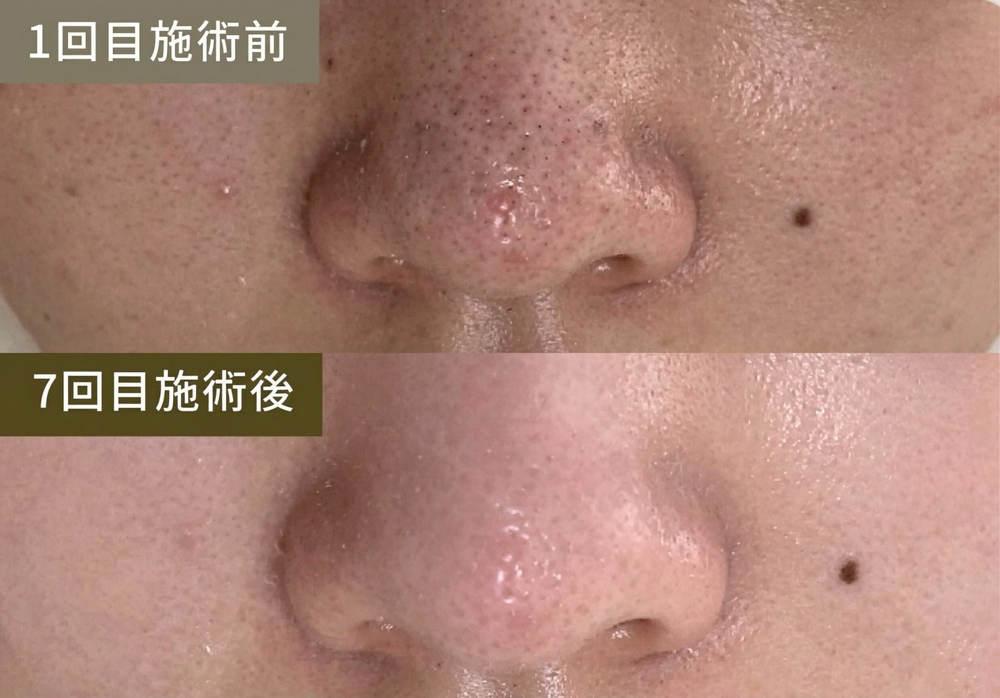
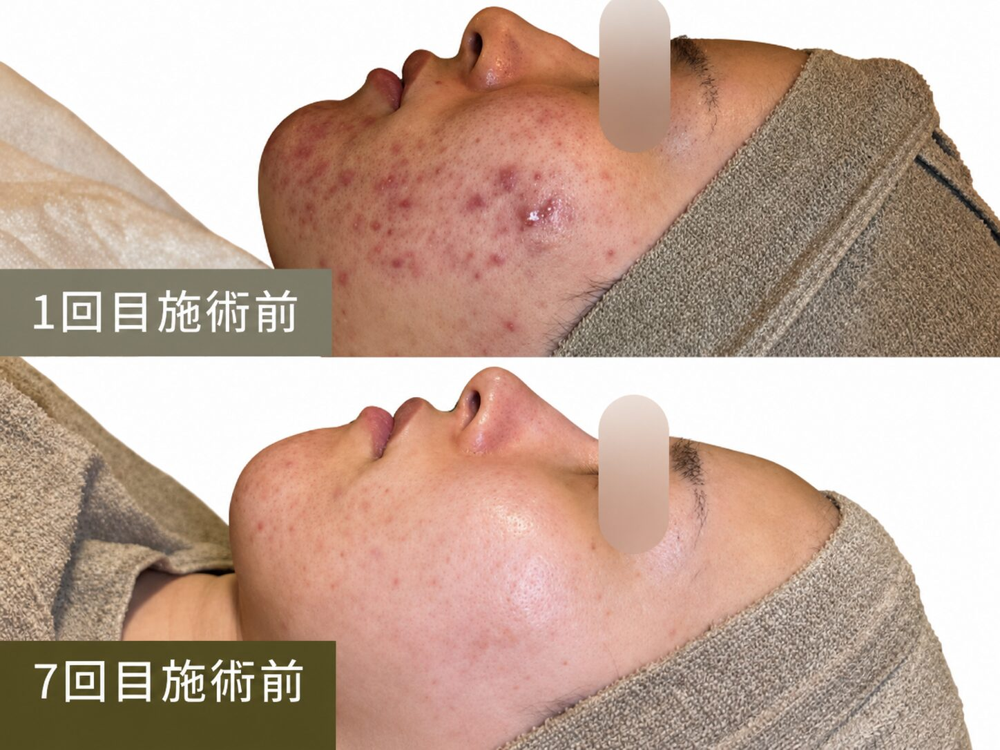
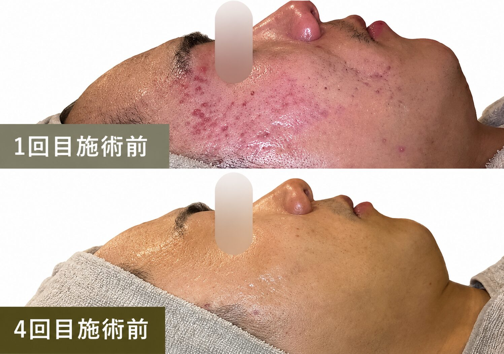
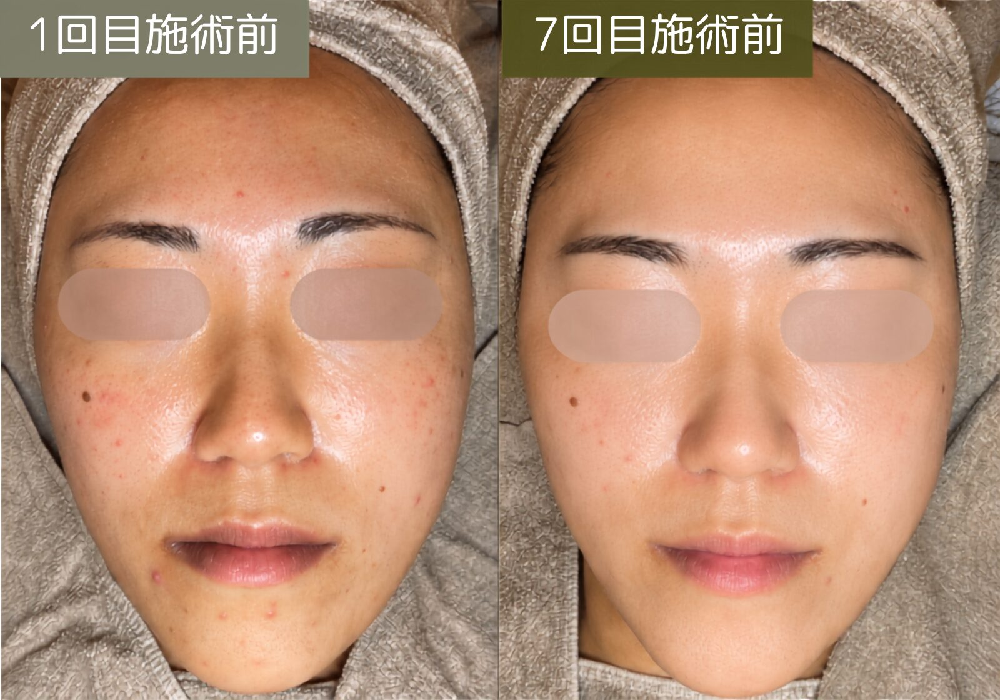
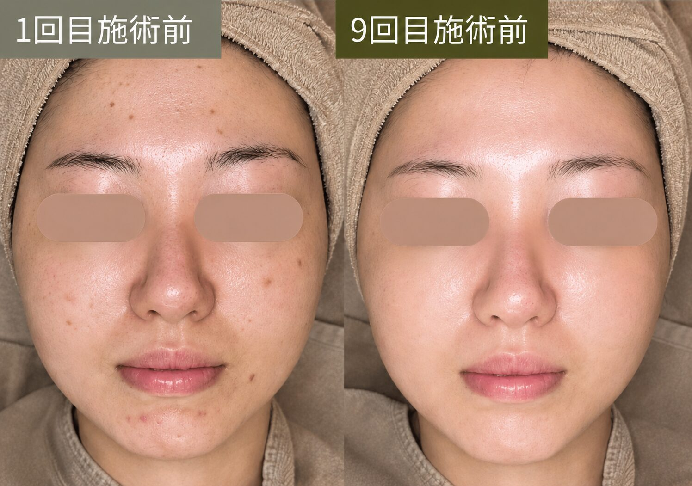
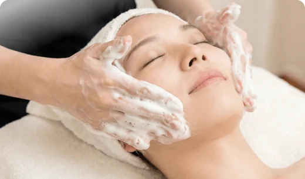
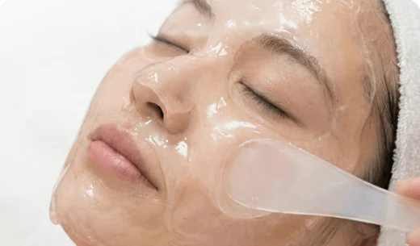
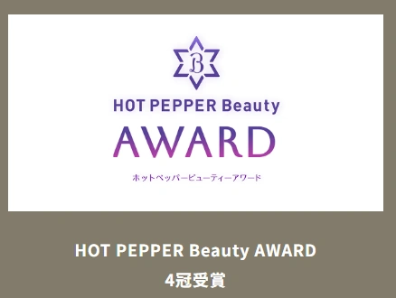
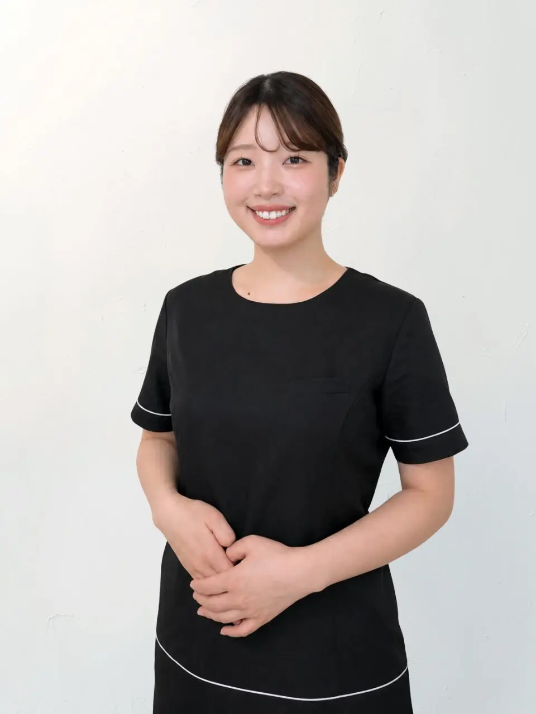

MAKEUPファンデを重ねるほど、
毛穴や凹凸が気になる朝。
毛穴や凹凸が気になる朝。
隠すことに時間をかけるより、薄づきのメイクを楽しみたい。
20代・30代前半からの、肌質改善
「今日はやめておきましょう」と言える、
ハーブピーリング専門店。
肌に合わないと判断した日は、施術をおすすめしません。
FUTURE SKIN
カウンセリングとシステム肌診断で、
今の肌に合う施術をご提案。
FOR 20s — EARLY 30s
化粧品や毎日のケアを工夫しても、ニキビ跡や毛穴が、やっぱり気になる。
美容施術は気になるけれど、肌への刺激も、勧誘されないかも不安。
たくさんの情報を見比べるほど、自分の肌に何が合うのか、分からなくなる。
他のサロンでハーブピーリングを受けたけれど、思ったような変化を感じられなかった。
WHAT COULD CHANGE?
大切な人に会う朝も、鏡の前でメイクする時間も。肌のことが気になって、気持ちまで曇る。そんな小さなストレスを減らして、今日をもっと楽しみたい。

隠すことに時間をかけるより、薄づきのメイクを楽しみたい。
服も髪も決まった日は、肌のことも気にせず出かけたい。
相手の視線を気にするより、会話に自然と笑顔を向けたい。
CASE JOURNAL / 施術例
 施術前複数回施術後
施術前複数回施術後 
施術前複数回施術後
施術前複数回施術後
施術前複数回施術後 施術前複数回施術後
施術前複数回施術後 
施術前複数回施術後
施術前複数回施術後WHY LAVIORA / 独自性
WHAT'S DIFFERENT / 他のサロンと、何が違うのか。
あなたの肌に合わせて、施術をカスタマイズ。
肌診断の結果から、4つの施術タイプと刺激の強さを、一人ひとりの肌に合わせて組み立てます。
「今日はやめておきましょう」も、提案のひとつ。
都度払いだから、続けるかどうかを毎回あなたが決められます。
帰ってからも、何でも聞いてください。
施術後の肌の様子、自宅でのケア、ちょっとした不安まで。肌質管理士で構成された相談窓口が、LINEでお答えします。
使う商材は、創薬会社と共同開発した自社処方。
細胞の増殖量・美白効果・エイジングの効果など、改善の根拠となる研究データをお示しできます。
RESEARCH & PERSONAL CARE
創薬会社・大学病院との共同開発から生まれた、ダイヤモンドハーブピーリング®。独自の処方・施術設計を、一人ひとりの肌状態に合わせてご提案します。内容をご説明し、納得いただいてから施術へ進みます。
徹底的に肌を分析し、あなたに合う施術を選ぶところに、たっぷり時間をかけます。
REASON 01
累計5万件以上の施術実績をもとにした、La Vioraの肌診断システムで、生活習慣・肌状態・肌特性を分析。肌質管理士が普段のケア、刺激への不安、大切な予定まで伺い、施術を選ぶ理由もお伝えします。
肌状態
乾燥・皮脂・刺激の感じやすさ
これまで
普段のケア・施術経験・生活習慣
これから
目指したい状態・大切な予定・通い方

REASON 02
商材も、強さも、通い方も、お店によって違います。
ダイヤモンドハーブピーリング®を、Calm⁺ / Calm / Core / Boost の4タイプから、その日の肌状態に合わせてカスタマイズしてご提案します。来店前に、ご自身で決める必要はありません。
以前の施術で変化を感じなかった方も、まずは肌診断から。様々な角度から肌を分析し、今の肌に合うかを確かめます。
PRICE & PARTS / 施術箇所
初回 5,800円（税込） LINE友だち追加限定（通常7,800円）
2回目以降は、1回ごとに11,800円（税込）。コース契約・回数券はありません。
所要時間 約120分（カウンセリング含む）
気になる部位は、1箇所につき＋5,000円（税込）で追加できます。フェイス、首・デコルテ、二の腕、背中上部、背中下部からお選びいただけます。

FIRST VISIT GUIDE / 初めての方へ
まずは自分の肌に合うか、確かめたい。その気持ちを大切に、契約への不安も、帰宅後の迷いも相談できる仕組みを整えています。
Q1何回も通う契約が必要ですか？
1回ごとに内容と料金を確認し、次も受けるかをご自身で決められます。
Q2勧誘や営業をされませんか？
必要な施術をご案内しますが、その場で次回予約や契約を決める必要はありません。
Q3帰宅後も相談できますか？
施術後の肌の状態や、自宅でのケア、次回来店までの過ごし方を相談できます。
赤みや違和感など気になることがあれば、丁寧に対応します。
友だち追加後すぐ確認。相談・予約は、納得してからで大丈夫です。
THE TREATMENT JOURNEY / 施術の流れ

01
悩みだけでなく、これまでのケア、刺激への不安、大切な予定まで。今の肌に合う進め方を一緒に整理します。
EXPERIENCE VALUE不安や予定を、施術前に共有できる
02
肌診断システムで生活習慣・肌状態・肌特性を様々な角度から分析し、一人ひとりにおすすめのピーリングをご提案します。
EXPERIENCE VALUE自分に合うピーリングを、理由と一緒に知る

03
余分な皮脂や汚れを丁寧に落とし、肌の状態を見やすくしながら施術の準備を整えます。

04
決められた一つの強さではなく、その日の肌状態と目的に合わせ、刺激の感じ方にも配慮して進めます。
EXPERIENCE VALUE「強い」より、「合う」を選べる

05
ダイヤモンドジェルパックによる、鎮静と細胞の再生。

06
ダイヤモンドリペアクリームによる保湿・ツヤ。

07
施術前後の肌状態を写真で一緒に確認し、当日の過ごし方や避けたいこと、自宅でのケアを分かりやすくお伝えします。
EXPERIENCE VALUE帰ってからも、迷わず過ごせる
各工程・所要時間は目安です。肌状態や施術内容により変わる場合があります。
RETURN VISITS / 再来店
リピート率88%
全店舗累計施術実績 50,000件以上
施術実績は全店舗の累計施術回数です。リピート率は、2025年〜2026年7月の実績をもとに、再来店された方の割合を自社基準で算出した値です。2026年9月14日時点。
REVIEWS & SALONS / 選ぶための判断材料
口コミ 5,000件以上
口コミ 2,300件
※2026年2月時点・全店23店舗合算（2026年9月現在は28店舗・オープン準備中を含む）。本部提供資料に基づきます。口コミは個人の感想であり、施術効果を保証するものではありません。

ハーブピーリング専門店・全国28店舗
※2026年9月現在。オープン準備中の店舗を含みます。
THE EXPERIENCE / 店内・スタッフ

肌の悩みも、すっぴんも。人目を気にせず過ごせるように、来店から退店までを設計しています。
他のお客様と一緒に待つ時間はありません。
周囲を気にせず、肌のことを話せます。
最後まで、他のお客様と顔を合わせずに。
SALON STAFF / スタッフ
ビューティーエリート
アカデミーBeautyElite Academy Japan
肌質管理士コース
通過率3％
厳しい基準の肌質管理士コースを卒業した肌質管理士が、あなたの肌に向き合います。
施術前だけでなく、施術中に感じた刺激や不安もお伝えください。担当スタッフは店舗により異なります。



QUALITY / 品質への取り組み

国際特許取得成分「不死化ヒト歯髄幹細胞培養上清（ImS）」を使用。
使用する製品は国内で製造。
界面活性剤・パラベン・アルコール等を使用しない設計。
重金属・ヒ素・無菌試験等の結果を、ご希望の方に開示。
HOW TO START / LINEでの確認方法
初回（1箇所）を5,800円で受けられるクーポンです（通常7,800円）。
見るだけでも大丈夫です。気になることは肌質管理士に聞けます。
予約するかどうかは、そのときのあなたが決められます。
QUESTIONS / よくある質問
はい、ご安心ください。 La Viora Clinicalでは、初めての方にも安心してお過ごしいただけるよう、施術前に丁寧なカウンセリングを行い、お肌の状態やお悩みに合わせてご提案いたします。内容をご説明し、ご納得いただいたうえで施術を行いますので、不安な点はその場で何でもご相談ください。
また、お持ち物は特に必要なく、メイクをしたままご来店いただけます。 施術前に当店で専用のクレンジング・洗顔を行い、お肌を最適な状態へ整えてから施術に入りますので、初めての方でも安心してお越しいただけます。
ほとんどありません。 施術中に軽いピリつきを感じる方もいらっしゃいますが、一時的な反応であり、通常はすぐにおさまります。剥離しない処方のため、大切な予定の前日でも安心して受けていただけます。
肌のターンオーバー周期に合わせ、改善期は2〜4週間に1回のペースでの施術がおすすめです。 数回施術を受けていただいた後は、2〜4ヶ月に1度のメンテナンスで状態を定着させることが可能です。
完全都度払い制のサロンです。 無理な勧誘やコース契約は行っておらず、都度、ご自身のタイミングでご利用いただけます。施術料金以外の追加費用はかからず、施術に付随する商品の販売も行っていません。La Viora Clinicalでは、無理な販売ではなく、施術そのものにご納得いただくことを大切にしています。
お支払いは、現金・クレジットカード・交通系IC・iD・QUICPayに対応しています（※PayPayはご利用いただけません）。また、転勤やお引越しの際には、全国の店舗へ移動して通っていただくことが可能で、手数料などは発生しません。
ダイヤモンドハーブピーリング®は、剥離や強いダウンタイムを前提とした施術ではございません。 そのため、施術前後に日常生活を大きく制限していただく必要はなく、特別なご準備も不要です。 また、施術直後からメイク・スキンケアともに可能でございます。 サロンにはドレッサー・ドライヤー・ヘアアイロンをご用意しておりますので、ゆっくりとお支度いただけます。 なお、施術当日はサウナや長時間の入浴など、体を過度に温める行為はお控えください。また、同日の脱毛施術もお控えいただいております。
YOUR NEXT STEP
「今日はやめておきましょう」が言える、
ハーブピーリング専門店。
「やめておく」も、ご提案のひとつ。
今日、施術を受けるかどうかは、
お客様が決められます。